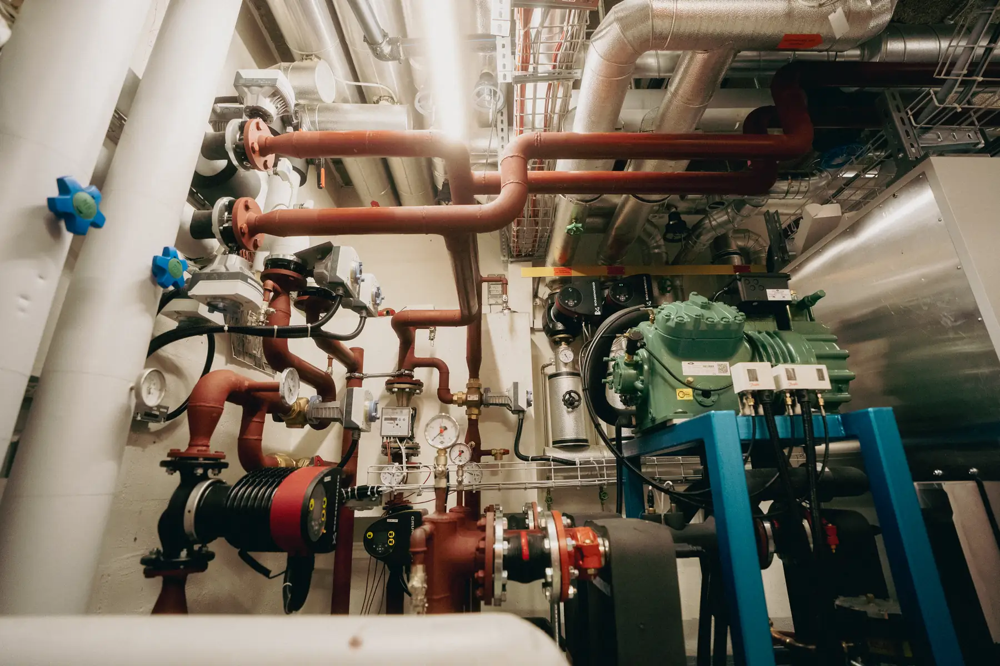
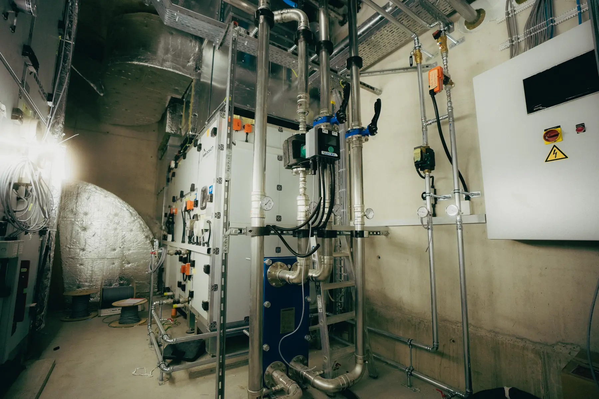

Wärmepumpen in grossen Gebäuden: Lastspitzen im Winter vermeiden
Eine Wärmepumpe ist effizient. Brauchen am kältesten Morgen aber viele Gebäude gleichzeitig Wärme, wird die Leistungsspitze zum Thema: für das Stromnetz und oft auch für die eigene Rechnung.

Wer heute eine Öl- oder Gasheizung in einem grossen Gebäude ersetzt, setzt fast immer auf eine Wärmepumpe. Das ist richtig. Damit verschiebt sich aber die Frage. Es geht nicht mehr nur darum, wie viel Energie ein Gebäude im Jahr braucht, sondern wann es sie braucht.
Warum die Spitze zum Thema wird
An kalten Wintertagen steigt der Heizbedarf vieler Gebäude gleichzeitig. Bei einem künftig hohen Anteil an Wärmepumpen könnten dadurch zusätzliche elektrische Lastspitzen entstehen in der Grössenordnung von bis zu 10 Gigawatt. Das zeigen die Energieperspektiven des Bundes. Gleichzeitig fällt im Winter mit dem Ausstieg aus der Kernenergie künftig Produktion weg.
Für ein einzelnes Gebäude zeigt sich das an zwei Stellen. Erstens am Netzanschluss: Die Leistung, die am kältesten Tag gebraucht wird, bestimmt seine Grösse. Zweitens am Tarif: Bei grösseren Bezügern verrechnen viele Netzbetreiber nicht nur die Energie, sondern auch die höchste bezogene Leistung.
Nicht die grösste Wärmepumpe löst das Problem, sondern die klügste Betriebsweise.
Was Speicher leisten
Ein Pilotprojekt des Kantons Zürich hat das mit Gebäudesimulationen untersucht, gemeinsam mit dem Institut für Solartechnik SPF der OST, der Hochschule Luzern und den Werken Wallisellen. Kombiniert wurden Wärmepumpen mit grossen thermischen Speichern und einer intelligenten Regelung.
Das Ergebnis: Gebäudesimulationen zeigen eine durchschnittliche Reduktion der maximalen elektrischen Leistungsspitzen um rund 12 Prozent. In einem Mehrfamilienhaus als Beispiel ging die Spitze in der Simulation von 16,6 auf 13,3 Kilowatt zurück. Werden mehrere Gebäude im Quartier gemeinsam geregelt, ist die Wirkung deutlich grösser. Als gutes Verhältnis von Speichergrösse und Nutzen nennt die Studie Speicher, die 8 bis 12 Stunden überbrücken.
Regelung: wann die Wärmepumpe läuft
Speicher allein nützen wenig, wenn die Regelung nicht weiss, wofür sie da sind. Drei Hebel haben sich bewährt:
- Vorladen: Thermische Speicher und Gebäudemasse vor erwarteten Lastspitzen gezielt nutzen.
- Staffeln: Mehrere Wärmepumpen zeitlich koordiniert betreiben, um gleichzeitige Leistungsspitzen zu vermeiden.
- Begrenzen: Die elektrische Leistungsaufnahme gezielt steuern, ohne Heizkomfort und Versorgungssicherheit zu beeinträchtigen.
Wo die Gebäudeautomation fehlt oder veraltet ist, lohnt sich der Blick auf eine Nachrüstung. Mehr dazu in unserem Beitrag zur Gebäudeautomation.
Das Gebäude als Speicher
Auch die Bausubstanz speichert Wärme. Betondecken und Fussbodenheizungen puffern einige Stunden, ohne dass es im Raum spürbar kälter wird. Schulhäuser und Verwaltungsbauten haben dazu klare Nutzungszeiten: Nachts und am Wochenende lässt sich die Wärmeerzeugung gezielt verschieben.
Wo es sich besonders lohnt
- Schulanlagen und Verwaltungsbauten mit klaren Nutzungszeiten.
- Betriebe mit Leistungstarif oder knappem Netzanschluss.
- Areale mit mehreren Gebäuden und gemeinsamer Wärmeerzeugung.
- Gebäude mit Photovoltaik, die eigenen Strom tagsüber als Wärme speichern können.
Was in der Planung geprüft gehört
- Lastgang: Wie verteilt sich der Bedarf über den Tag und über eine ganze Heizperiode? Ohne Messung bleibt jede Auslegung eine Schätzung.
- Vorlauftemperatur: Je tiefer, desto effizienter, siehe Wärmepumpe im Bestand. Das entscheidet über die Grösse der Anlage.
- Speichergrösse: nach der Zeit, die überbrückt werden soll, nicht nach Faustregel.
- Regelstrategie: und ihre Schnittstelle zur Gebäudeautomation.
- Hydraulischer Abgleich: damit die Wärme dort ankommt, wo sie gebraucht wird.
- Netzbetreiber: Anschlussleistung und Tarifmodell früh klären.
Die Spitze entscheidet sich in der Planung, nicht im Betrieb.
Fazit
Wärmepumpen sind für grosse Gebäude der richtige Weg. Wer sie plant, sollte aber nicht nur die Jahresenergie anschauen, sondern auch die Spitze am kältesten Tag. Mit Speicher, einer intelligenten Regelung und einer sauberen Auslegung lässt sich diese Spitze spürbar senken. Das entlastet das Netz und oft auch das Budget.
Bei Energie Studio planen wir Wärmeerzeugung, Speicher und Regelung als Gesamtsystem. Wo zuerst der Lastgang eines Betriebs analysiert werden muss, arbeiten wir mit Energy Consulting zusammen.
Quellen
- Bundesamt für Energie: Energieperspektiven 2050+.
- Kanton Zürich, Pilotprojekte Energie: Winterstromspitzen brechen mit Wärmespeichern (OST Institut für Solartechnik SPF, Hochschule Luzern, die werke versorgung wallisellen ag, ASGAL Informatik GmbH).
Dieser Beitrag ordnet ein und ersetzt keine Planung am konkreten Objekt. Normen, Förderbedingungen und kantonale Vorgaben ändern sich. Prüfen Sie den aktuellen Stand bei der zuständigen Stelle.
Weiterlesen

Wärmepumpe im Bestand: wann sie funktioniert und wann nicht
Vorlauftemperatur, Heizflächen und Schallschutz entscheiden — nicht das Baujahr. Eine Einordnung ohne Versprechen.
Gebäudeautomation im laufenden Betrieb erweitern
Offene Schnittstellen, Datenpunktlisten und Migrationspfade — wie man eine Leittechnik erneuert, ohne das Gebäude anzuhalten.